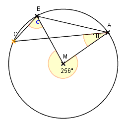

Lösung Nr 8a, p. 29

Gesucht: Winkel α
Lösung:
Der Zentriwinkel, der zum kleineren Bogen über AB gehört, misst (360°-256°)= 104°
Also misst der dazugehörige Peripheriewinkel (Scheitel C) 52°
Sei S der Schnittpunkt von MB mit AC. Der Winkel des Dreiecks MAS bei S ist 180° - 18°- 104° = 58°
Also ist der Winkel des Dreiecks BCS bei S ebenfalls 58° (Scheitelwinkel)
Daher muss α = 180° - 52° - 58° = 70° gross sein.